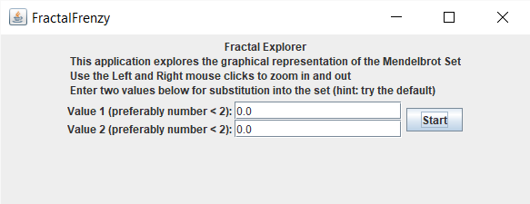
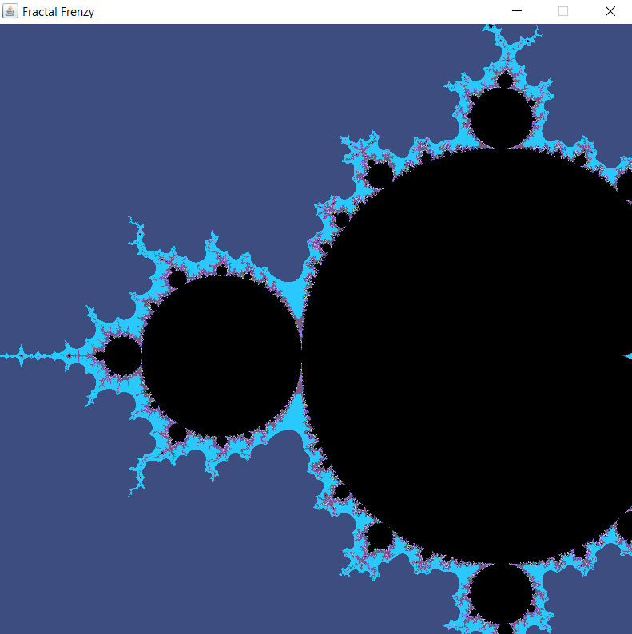
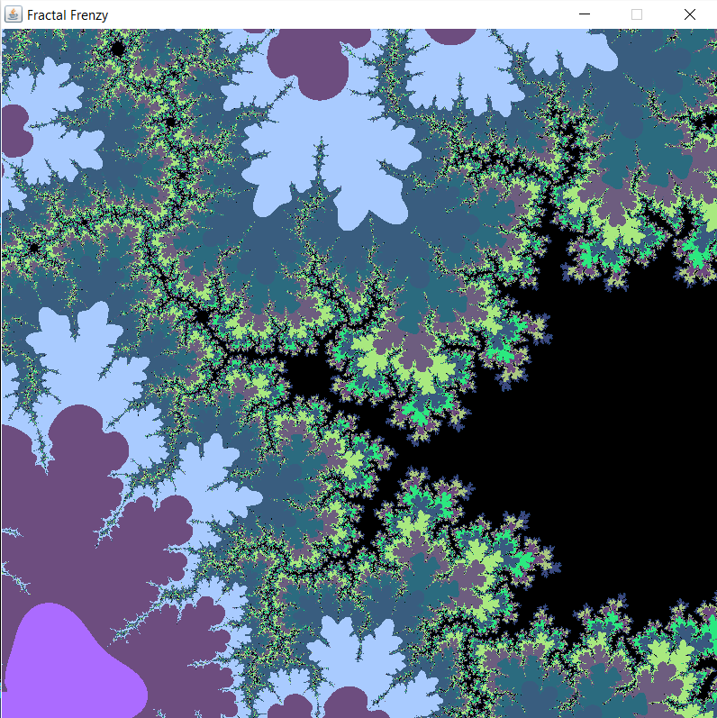

Fractal Frenzy



This application I developed allows the user to explore the self replicating intricacies of the Mandelbrot Set by graphing the real and complex numbers to a 2-dimensional plane that can be shown on the computer. The user is also allowed to change the initial values used to create the fractal to custom values to distort the Mandelbrot Set or create an entirely new fractal. The user has exploration capabilities through the use of the mouse and keyboard to both zoom in to the fractal and move in the cardinal directions. The zoom function is capable of zooming up to 10^23 scale. This application is suited for the casual desktop computer; further complexity of the fractal would require significant computer power, i.e. a super computer.
The images shown here are the main application GUI (image 1), the initial image displayed to screen when the user expresses the Mandelbrot set without changing the initial values (image 2), and another image showcasing the fractal when zoomed into one part (image 3).
The code, documentation, and java application is available for download on github.
https://github.com/AlexeiGarcia/FractalFrenzy